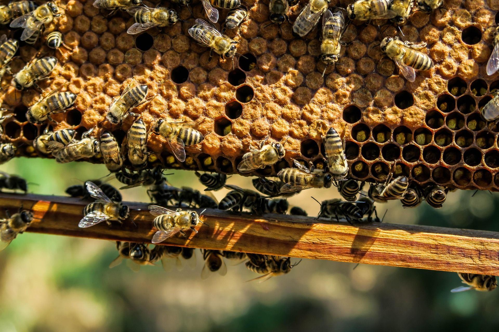
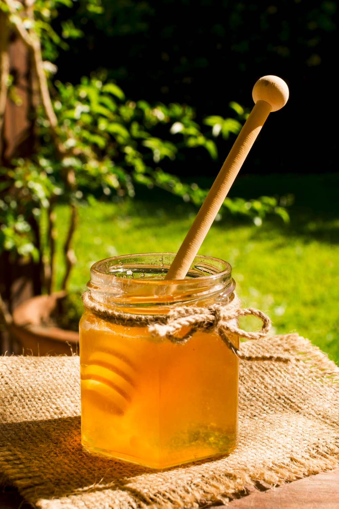
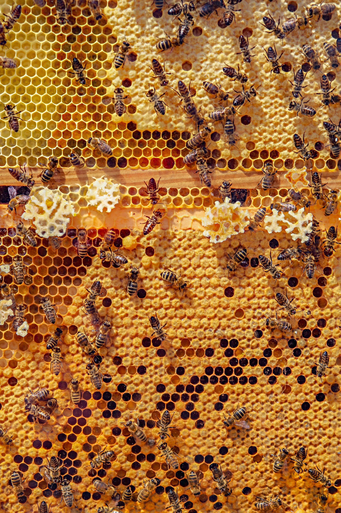
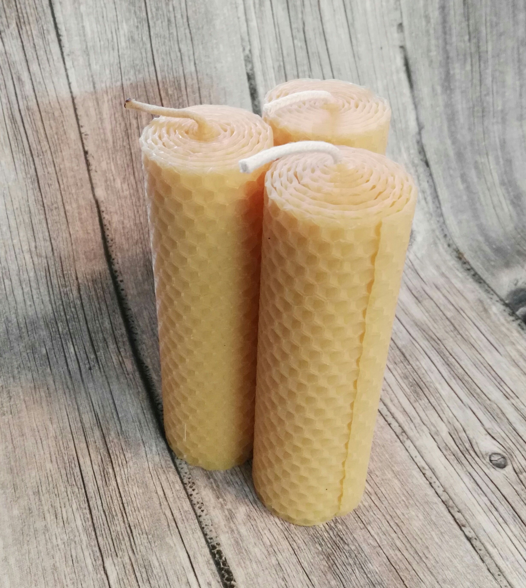
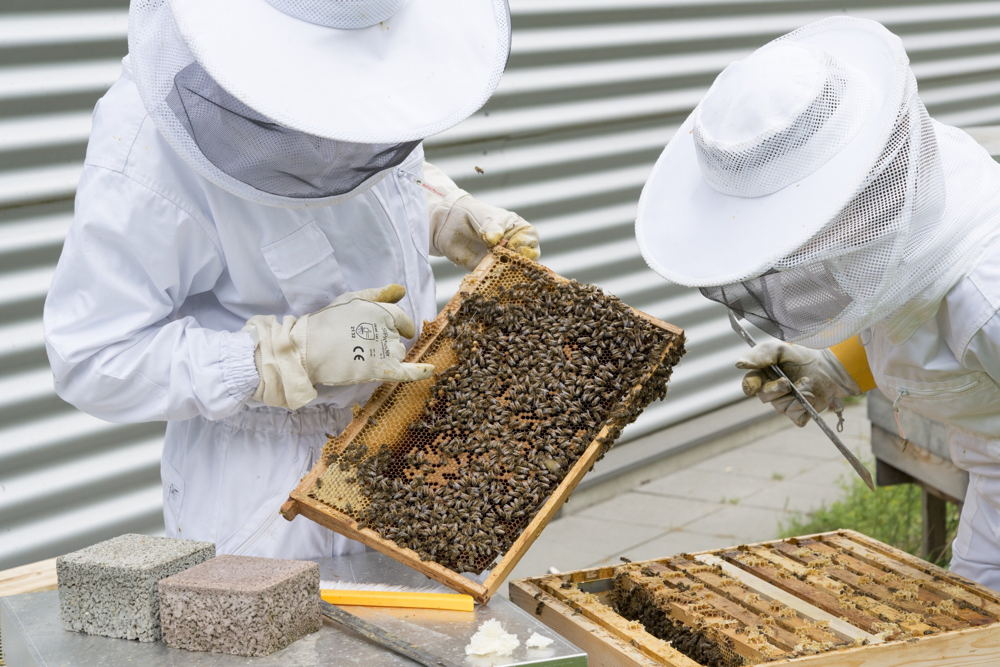
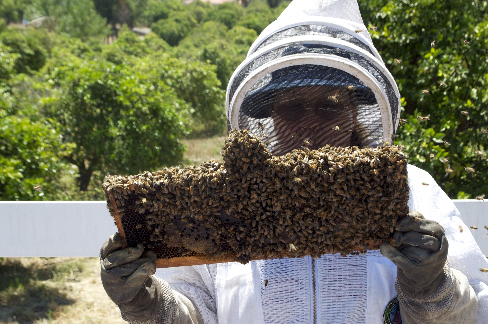
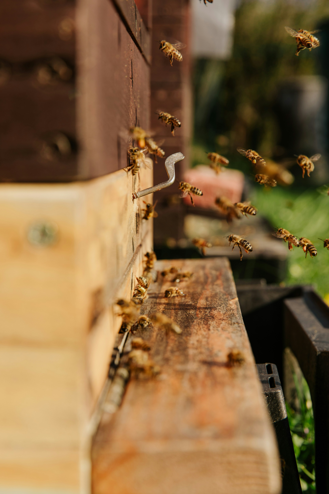
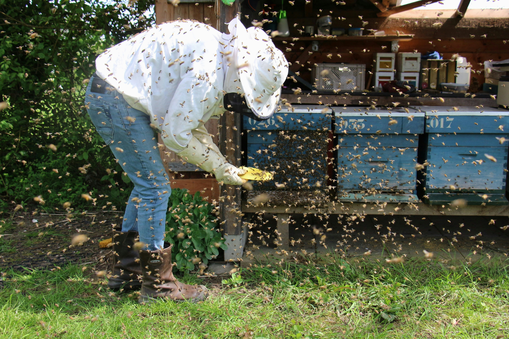
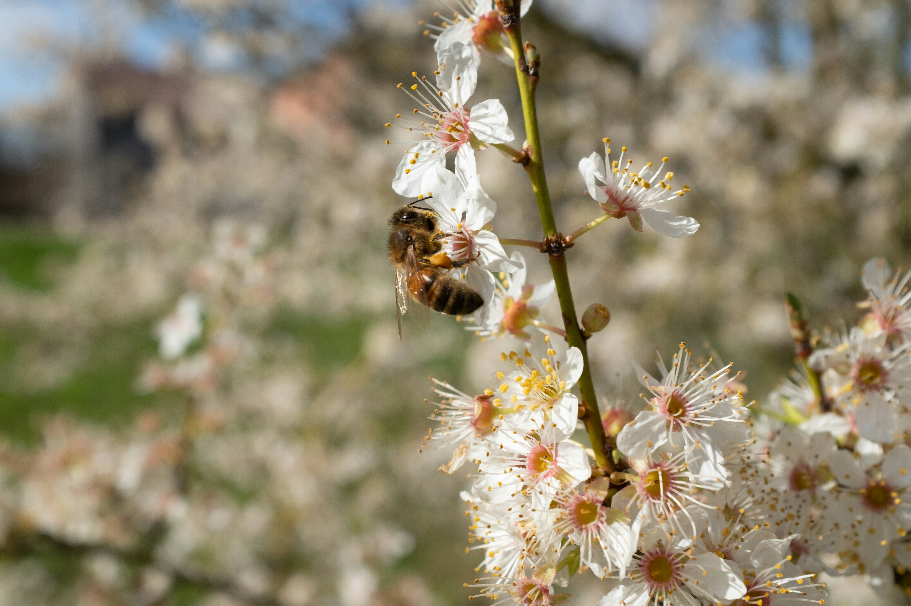

Bee my guest
Produkte
Unsere Bienenprodukte werden direkt am Hof hergestellt und verkauft. Neben diversen Honigarten wie Wald-,
Blüten- oder Cremehonig gibt es auch eine ganz besondere Spezialität: Honig aus frischen Bienenwaben!
Da
dieser nicht immer verfügbar ist, bitten wir um Voranmeldung, wenn sie daran Interesse haben. Außerdem
können Sie bei uns verschiedenste Bienenwachsprodukte erwerben, von Kerzen über reines Bienenwachs bis zu
Hautpflege.
Honig
Von der Blume ins Glas: Honig als authentisches Genussprodukt aus verantwortungsvoller Imkerei - natürlich, hochwertig, aromatisch

frische Waben
frische Honigwaben als purer Genuss in ursprünglichster Form, frisch und direkt aus dem Bienenstock

Bienenwachskerzen
Duftendes Bienenwachs in unterschiedlichsten Kerzenformen sorgen für eine gemütliche, naturbelassene Atmosphäre im eigenen Heim

Über uns
Als kleiner Familienbetrieb ist unsere Imkerei aus der Liebe zur Natur und der Faszination für das Leben der
Bienen entstanden. Mit viel Hingabe kümmern wir uns Tag für Tag um unsere Völker und legen großen Wert auf
einen achtsamen und respektvollen Umgang mit jedem einzelnen Bienenstock. Für uns bedeutet Imkerei nicht nur
Honig zu gewinnen, sondern ein Stück ursprüngliche Natur zu bewahren und weiterzugeben.
Jedes Produkt, das unsere Imkerei verlässt, entsteht mit Sorgfalt, Erfahrung und echter Handarbeit. Dabei
verbinden wir traditionelles Wissen mit einem hohen Anspruch an Qualität, damit Sie den unverfälschten
Geschmack und die besondere Reinheit unserer Erzeugnisse genießen können. So entsteht aus einem kleinen
Familienbetrieb etwas, das man in jedem Glas und in jedem Detail spüren kann.






Kontakt

Besuche uns für köstliche Bienenprodukte ab Hof
Imkerei Familienbetrieb Hofer
Waldweg 16
8053 Graz